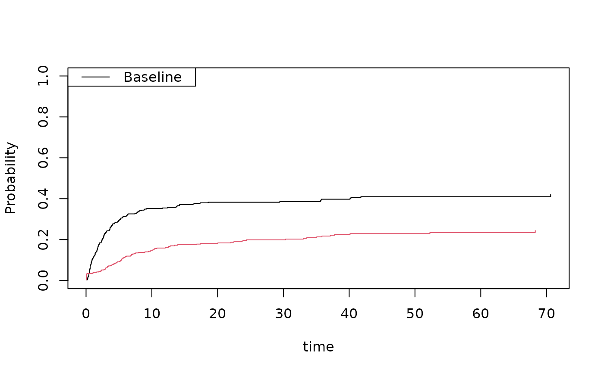

Fits a binomial regression model for a specific time point in the presence of right-censored data and competing risks. This function implements the Inverse Probability of Censoring Weighted (IPCW) estimating equation approach.
Usage
binreg(
formula,
data,
cause = 1,
time = NULL,
beta = NULL,
type = c("II", "I"),
offset = NULL,
weights = NULL,
cens.weights = NULL,
cens.model = ~+1,
se = TRUE,
kaplan.meier = TRUE,
cens.code = 0,
no.opt = FALSE,
method = "nr",
augmentation = NULL,
outcome = c("cif", "rmst", "rmtl"),
model = c("default", "logit", "exp", "lin"),
Ydirect = NULL,
...
)Arguments
- formula
A formula object specifying the outcome and covariates. The outcome must be an
Eventobject (Event(time, cause)).- data
A data frame containing the variables in the formula.
- cause
Numeric vector or scalar indicating the cause of interest for the competing risks.
- time
Numeric scalar indicating the time point of interest for the cumulative incidence.
- beta
Optional numeric vector of starting values for the coefficients. Defaults to zeros.
- type
Character string. Either
"I"(classic binomial regression) or"II"(adds augmentation term).- offset
Optional numeric vector of offsets for the linear predictor.
- weights
Optional numeric vector of weights for the score equations.
- cens.weights
Optional numeric vector of pre-calculated censoring weights. If NULL, they are estimated internally.
- cens.model
A formula specifying the censoring model. Defaults to
~+1. Can include strata (e.g.,~strata(group)).- se
Logical. If TRUE, computes standard errors based on IPCW influence functions.
- kaplan.meier
Logical. If TRUE, uses Kaplan-Meier estimator for IPCW weights; otherwise uses exponential baseline.
- cens.code
Numeric code representing censored observations in the status variable. Defaults to 0.
- no.opt
Logical. If TRUE, optimization is skipped and starting values are used.
- method
Character string. Optimization method:
"nr"(Newton-Raphson) or"nlm".- augmentation
Optional numeric vector for additional augmentation terms.
- outcome
Character string. Outcome type:
"cif"(Cumulative Incidence Function),"rmst"(Restricted Mean Survival Time), or"rmtl"(Restricted Mean Time Lost).- model
Character string. Link function:
"default"(auto-selects based on outcome),"logit","exp", or"lin"(identity).- Ydirect
Optional numeric vector. If provided, this outcome is used instead of constructing one from
outcome. Useful for custom IPCW adjustments.- ...
Additional arguments passed to lower-level optimization functions.
Value
An object of class "binreg" containing coefficients, variance-covariance matrix,
influence functions (iid), and model details.
Details
The model estimates the probability: $$P(T \leq t, \epsilon=1 | X ) = \text{expit}( X^T \beta) $$
Based on binomial regresion IPCW response estimating equation: $$ X ( \Delta^{ipcw}(t) I(T \leq t, \epsilon=1 ) - expit( X^T beta)) = 0 $$ where $$\Delta^{ipcw}(t) = I((min(t,T)< C)/G_c(min(t,T)-)$$ is IPCW adjustment of the response $$Y(t)= I(T \leq t, \epsilon=1 )$$. Two types of estimators are available:
type="I": Solves the standard IPCW estimating equation.type="II": Adds a censoring augmentation term for efficiency gains, solving $$X \int E(Y(t)| T>s)/G_c(s) d \hat M_c$$.
Alternatively, logitIPCW performs a standard logistic regression with
IPCW weights applied directly to the likelihood. Thus solving
$$ X I(min(T_i,t) < G_i)/G_c(min(T_i ,t)) ( I(T \leq t, \epsilon=1 ) - expit( X^T beta)) = 0 $$
a standard logistic regression with IPCW weights.
The variance estimation is based on squared influence functions, with options for naive variance (assuming known censoring) and robust variance (accounting for censoring model estimation).
Censoring model may depend on strata (cens.model=~strata(gX)).
References
Blanche PF, Holt A, Scheike T (2022). "On logistic regression with right censored data, with or without competing risks, and its use for estimating treatment effects." Lifetime data analysis, 29, 441–482.
Scheike TH, Zhang MJ, Gerds TA (2008). "Predicting cumulative incidence probability by direct binomial regression." Biometrika, 95(1), 205–220.
Outcome definition
The observed outcome \(Y_i\) constructed from outcome depends on whether
competing risks are present. Competing risks are detected automatically: the data are
considered to have competing risks when causes other than those specified in cause
are observed (i.e. any(!(Causes %in% cause)), where Causes are all
non-censoring event codes found in the data).
No competing risks (all observed events belong to cause):
"cif": \(Y_i = I(T_i \leq t, \epsilon_i = 1)\). Cumulative incidence."rmst": \(Y_i = \min(T_i, t)\). Restricted mean survival time."rmtl": \(Y_i = t - \min(T_i, t)\). Restricted mean time lost.
Competing risks (causes beyond cause are observed in the data):
"cif": \(Y_i = I(T_i \leq t, \epsilon_i \in \code{cause})\). Cumulative incidence for the cause(s) of interest."rmst"or"rmtl": \(Y_i = I(\epsilon_i \in \code{cause})(t - \min(T_i, t))\). Cause-specific years lost, accumulated only for subjects who experience an event incause.
The default link function (model = "default") is "logit" for "cif" and
"exp" for "rmst" and "rmtl".
If Ydirect is supplied, outcome construction is bypassed entirely.
Examples
data(bmt); bmt$time <- bmt$time+runif(408)*0.001
# logistic regresion with IPCW binomial regression
out <- binreg(Event(time,cause)~tcell+platelet,bmt,time=50)
summary(out)
#> n events
#> 408 160
#>
#> 408 clusters
#> coeffients:
#> Estimate Std.Err 2.5% 97.5% P-value
#> (Intercept) -0.180371 0.126758 -0.428812 0.068069 0.1547
#> tcell -0.418628 0.345431 -1.095661 0.258406 0.2256
#> platelet -0.436952 0.240978 -0.909260 0.035357 0.0698
#>
#> exp(coeffients):
#> Estimate 2.5% 97.5%
#> (Intercept) 0.83496 0.65128 1.0704
#> tcell 0.65795 0.33432 1.2949
#> platelet 0.64600 0.40282 1.0360
#>
#>
head(iid(out))
#> [,1] [,2] [,3]
#> 1 -0.006946278 0.004003719 0.006177065
#> 2 -0.006946278 0.004003719 0.006177065
#> 3 -0.006946278 0.004003719 0.006177065
#> 4 -0.006946278 0.004003719 0.006177065
#> 5 -0.006946278 0.004003719 0.006177065
#> 6 -0.006946278 0.004003719 0.006177065
predict(out,data.frame(tcell=c(0,1),platelet=c(1,1)),se=TRUE)
#> pred se lower upper
#> 1 0.3503906 0.04848684 0.2553563 0.4454248
#> 2 0.2619321 0.06969721 0.1253256 0.3985386
outs <- binreg(Event(time,cause)~tcell+platelet,bmt,time=50,cens.model=~strata(tcell,platelet))
summary(outs)
#> n events
#> 408 160
#>
#> 408 clusters
#> coeffients:
#> Estimate Std.Err 2.5% 97.5% P-value
#> (Intercept) -0.180643 0.127413 -0.430368 0.069082 0.1563
#> tcell -0.366540 0.350628 -1.053758 0.320678 0.2958
#> platelet -0.432328 0.240356 -0.903418 0.038761 0.0721
#>
#> exp(coeffients):
#> Estimate 2.5% 97.5%
#> (Intercept) 0.83473 0.65027 1.0715
#> tcell 0.69313 0.34863 1.3781
#> platelet 0.64900 0.40518 1.0395
#>
#>
## glm with IPCW weights
outl <- logitIPCW(Event(time,cause)~tcell+platelet,bmt,time=50)
summary(outl)
#> n events
#> 408 160
#>
#> 408 clusters
#> coeffients:
#> Estimate Std.Err 2.5% 97.5% P-value
#> (Intercept) -0.24143 0.13146 -0.49909 0.01623 0.0663
#> tcell -0.34466 0.36837 -1.06666 0.37734 0.3495
#> platelet -0.29275 0.26267 -0.80757 0.22208 0.2651
#>
#> exp(coeffients):
#> Estimate 2.5% 97.5%
#> (Intercept) 0.78551 0.60708 1.0164
#> tcell 0.70846 0.34416 1.4584
#> platelet 0.74621 0.44594 1.2487
#>
#>
##########################################
### risk-ratio of different causes #######
##########################################
data(bmt)
bmt$id <- 1:nrow(bmt)
bmt$status <- bmt$cause
bmt$strata <- 1
bmtdob <- bmt
bmtdob$strata <-2
bmtdob <- dtransform(bmtdob,status=1,cause==2)
bmtdob <- dtransform(bmtdob,status=2,cause==1)
###
bmtdob <- rbind(bmt,bmtdob)
dtable(bmtdob,cause+status~strata)
#> strata: 1
#>
#> status 0 1 2
#> cause
#> 0 160 0 0
#> 1 0 161 0
#> 2 0 0 87
#> ------------------------------------------------------------
#> strata: 2
#>
#> status 0 1 2
#> cause
#> 0 160 0 0
#> 1 0 0 161
#> 2 0 87 0
cif1 <- cif(Event(time,cause)~+1,bmt,cause=1)
cif2 <- cif(Event(time,cause)~+1,bmt,cause=2)
plot(cif1)
plot(cif2,add=TRUE,col=2)

cifs1 <- binreg(Event(time,cause)~tcell+platelet+age,bmt,cause=1,time=50)
cifs2 <- binreg(Event(time,cause)~tcell+platelet+age,bmt,cause=2,time=50)
summary(cifs1)
#> n events
#> 408 160
#>
#> 408 clusters
#> coeffients:
#> Estimate Std.Err 2.5% 97.5% P-value
#> (Intercept) -0.198986 0.130989 -0.455721 0.057748 0.1287
#> tcell -0.637397 0.356623 -1.336366 0.061572 0.0739
#> platelet -0.344165 0.246035 -0.826384 0.138054 0.1619
#> age 0.437231 0.107269 0.226988 0.647473 0.0000
#>
#> exp(coeffients):
#> Estimate 2.5% 97.5%
#> (Intercept) 0.81956 0.63399 1.0594
#> tcell 0.52867 0.26280 1.0635
#> platelet 0.70881 0.43763 1.1480
#> age 1.54841 1.25482 1.9107
#>
#>
summary(cifs2)
#> n events
#> 408 85
#>
#> 408 clusters
#> coeffients:
#> Estimate Std.Err 2.5% 97.5% P-value
#> (Intercept) -1.322499 0.157769 -1.631720 -1.013278 0.0000
#> tcell 0.747071 0.352244 0.056685 1.437456 0.0339
#> platelet -0.018603 0.276958 -0.561432 0.524225 0.9464
#> age -0.072066 0.141693 -0.349778 0.205646 0.6110
#>
#> exp(coeffients):
#> Estimate 2.5% 97.5%
#> (Intercept) 0.26647 0.19559 0.3630
#> tcell 2.11081 1.05832 4.2100
#> platelet 0.98157 0.57039 1.6891
#> age 0.93047 0.70484 1.2283
#>
#>
cifdob <- binreg(Event(time,status)~-1+factor(strata)+
tcell*factor(strata)+platelet*factor(strata)+age*factor(strata)
+cluster(id),bmtdob,cause=1,time=50,cens.model=~strata(strata))
summary(cifdob)
#> n events
#> 816 245
#>
#> 408 clusters
#> coeffients:
#> Estimate Std.Err 2.5% 97.5% P-value
#> factor(strata)1 -0.198986 0.130989 -0.455721 0.057748 0.1287
#> factor(strata)2 -1.322499 0.157769 -1.631720 -1.013278 0.0000
#> tcell -0.637397 0.356623 -1.336366 0.061572 0.0739
#> platelet -0.344165 0.246035 -0.826384 0.138054 0.1619
#> age 0.437231 0.107269 0.226988 0.647473 0.0000
#> factor(strata)2:tcell 1.384468 0.600932 0.206662 2.562274 0.0212
#> factor(strata)2:platelet 0.325561 0.432019 -0.521181 1.172304 0.4511
#> factor(strata)2:age -0.509297 0.208112 -0.917188 -0.101405 0.0144
#>
#> exp(coeffients):
#> Estimate 2.5% 97.5%
#> factor(strata)1 0.81956 0.63399 1.0594
#> factor(strata)2 0.26647 0.19559 0.3630
#> tcell 0.52867 0.26280 1.0635
#> platelet 0.70881 0.43763 1.1480
#> age 1.54841 1.25482 1.9107
#> factor(strata)2:tcell 3.99270 1.22957 12.9653
#> factor(strata)2:platelet 1.38481 0.59382 3.2294
#> factor(strata)2:age 0.60092 0.39964 0.9036
#>
#>
head(iid(cifdob))
#> [,1] [,2] [,3] [,4] [,5] [,6]
#> 1 -0.007447410 0.01777266 0.004626408 0.006532008 -0.0006993859 -0.01602055
#> 2 -0.007988079 0.01803370 0.006443556 0.006743289 -0.0035438539 -0.02069454
#> 3 -0.008864484 0.01851517 0.010424065 0.006902057 -0.0101066011 -0.03004029
#> 4 -0.008835255 0.01849721 0.010261947 0.006901974 -0.0098323466 -0.02967586
#> 5 -0.007126406 0.01762442 0.003706563 0.006378339 0.0006894991 -0.01349491
#> 6 -0.009148065 0.01870030 0.012151811 0.006875371 -0.0130595194 -0.03386388
#> [,7] [,8]
#> 1 -0.02078573 0.0033125072
#> 2 -0.01975607 0.0112648344
#> 3 -0.01757423 0.0274296240
#> 4 -0.01766263 0.0267930884
#> 5 -0.02132785 -0.0009458438
#> 6 -0.01662985 0.0341365456
newdata <- data.frame(tcell=1,platelet=1,age=0,strata=1:2,id=1)
riskratio <- function(p) {
cifdob$coef <- p
p <- predict(cifdob,newdata,se=0)
return(p[1]/p[2])
}
lava::estimate(cifdob,f=riskratio)
#> Estimate Std.Err 2.5% 97.5% P-value
#> p1 0.6605 0.2738 0.1239 1.197 0.01584
predict(cifdob,newdata)
#> pred se lower upper
#> 1 0.2349536 0.06593480 0.1057214 0.3641858
#> 2 0.3557104 0.07421722 0.2102446 0.5011761
(p1 <- predict(cifs1,newdata))
#> pred se lower upper
#> 1 0.2349536 0.0659348 0.1057214 0.3641858
#> 2 0.2349536 0.0659348 0.1057214 0.3641858
(p2 <- predict(cifs2,newdata))
#> pred se lower upper
#> 1 0.3557104 0.07421722 0.2102446 0.5011761
#> 2 0.3557104 0.07421722 0.2102446 0.5011761
p1[1,1]/p2[1,1]
#> [1] 0.6605194